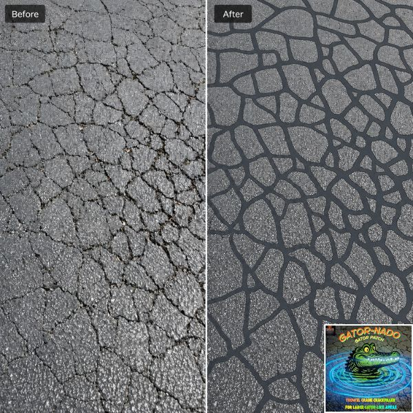

4.75 Gallon Bucket
Gator-Nado Alligator Crack Filler
A trowel-grade, sand-reinforced crack filler for alligator cracking, where asphalt has broken into a web of connected cracks. Spread it with a squeegee or trowel to fill the cracks and lock the broken sections back together.
- Sand built into the formula
- Holds broken, webbed sections in place
- Applies with a squeegee or trowel
- Ready to use: no dilution
- Secure checkout powered by Shopify
- Made by Pave-Tech LLC in Williamsburg, Ohio
- Buying in bulk? Ask about contractor pricing
About this product
When a standard crack filler isn't enough
Alligator cracking can't be fixed one crack at a time. Gator-Nado has sand built directly into the formula, so it covers large cracked areas, fills the open spaces between them and creates a stronger, more stable surface.
The heavily bodied, sand-reinforced formula helps hold damaged sections together and lock them in place. It spreads evenly across the area with a squeegee or trowel and dries to a dark, asphalt-matching finish. For many alligatored areas, it's a cost-effective alternative to a larger skin patching job.
Why it works
- Sand-reinforced to cover large alligatored areas
- Helps hold cracked sections together and lock them in place
- Also fills shallow depressions and wider cracks
- Ready to use, no dilution required
- Dark finish that blends with the pavement
Where to use it
Made for these jobs

- Alligatored areas in driveways and parking lots
- Shallow depressions
- Wider cracks where standard crack filler is not enough
- Commercial pavement and maintenance repairs
How to apply
How to apply Gator-Nado
-
1
Clean the area
Sweep or blow loose debris, dirt and weeds out of the damaged section.
-
2
Spread it on
Spread Gator-Nado across the alligatored area with a squeegee or trowel, working it into the connected cracks and open spaces.
-
3
Let it cure
Let it fully cure before driving on it, sealcoating or striping.
Watch it applied, start to finish.
At a glance
Product details
- Size
- 4.75 gallon bucket
- Surface
- Asphalt pavement
- Formula
- Sand-reinforced, trowel grade
- Application
- Squeegee or trowel
- Mixing
- None, no dilution
- Finish
- Dark, asphalt-matching
- Best for
- Alligator cracking, shallow depressions and wider cracks
FAQ
Common questions
What is alligator cracking?
It's a pattern of many small, connected cracks that looks like alligator skin. Because the surface has broken into pieces, filling single cracks one at a time won't hold it together. Gator-Nado covers the whole area at once.
Tornado or Gator-Nado: which do I need?
Use Tornado for individual cracks and seams. Use Gator-Nado for "alligator" cracking, where the asphalt has broken into a web of connected cracks. Gator-Nado has sand built in and is spread with a squeegee or trowel to lock those sections together.
What tools do I need?
A squeegee or trowel to spread it, plus a broom, wire brush or blower to clean the area first.
Do I need to mix or thin it?
No. Gator-Nado is ready to use, no dilution required.
Can I sealcoat over it?
Yes. Let the crack filler fully cure first, then sealcoat, stripe or open the area to traffic.
Can I use it on concrete?
Tornado and Gator-Nado are made for asphalt pavement. For damaged concrete and masonry, use Mix Master Concrete Repair Mortar, which patches, rebuilds and resurfaces concrete from a feather edge up to 1 inch (up to 4 inches when extended).
More from Tornado